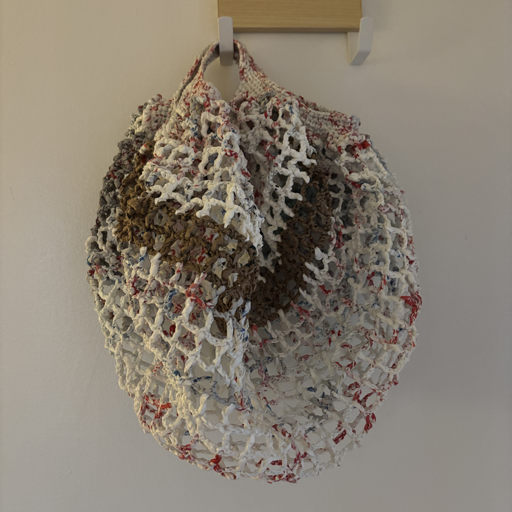
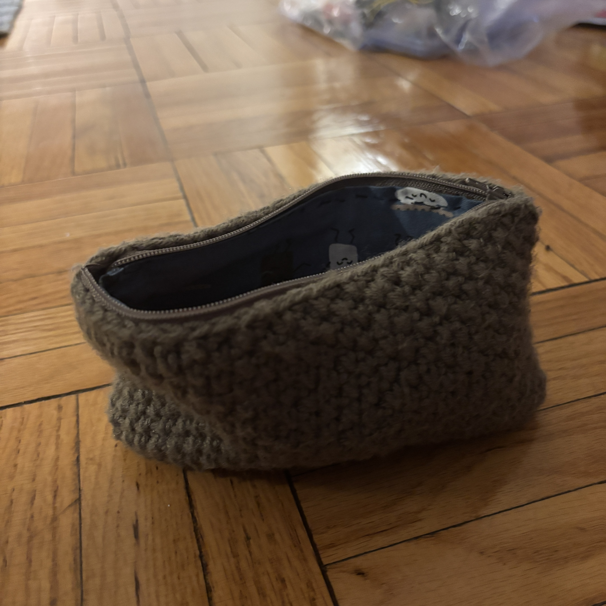
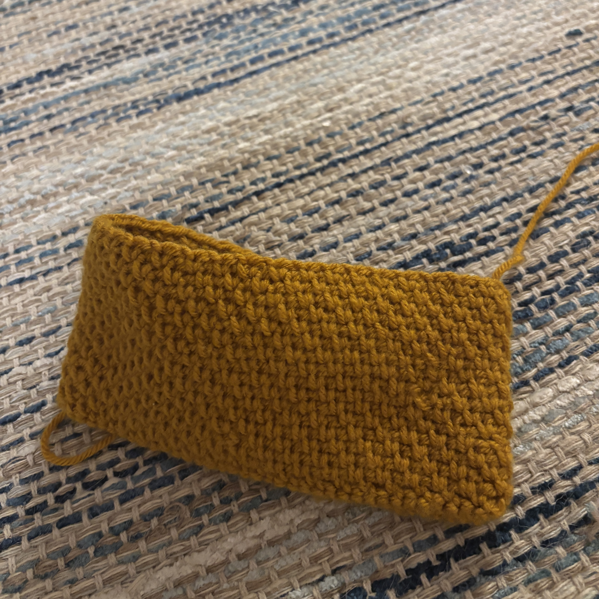

Bags
Recycled Plastic Bags


I made these out of "plarn" using grocery bags recycled almost entirely from my parent's house. (Plastic bag regulations haven't quite caught on in Texas yet).
Zipper Pouches


These are really nice, but lining them takes forever. It will probably be a few months until I get around to buying a zipper for the yellow one. RIP Joann's.
Misc. Bags

This was actually a really fun construction--I made a big triangle and then folded the ends in thirds and sewed up the bottom.